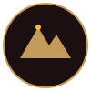

Payún Matrú
El volcán más alto de la reserva: casi 3.715 metros y una caldera de 8 km de diámetro.
Un desierto de más de ochocientos volcanes, coladas de lava negra y silencio absoluto: el paisaje que le dio nombre y espíritu a cada una de nuestras etiquetas.
En el sur de Mendoza, la Reserva Natural La Payunia reúne una de las mayores concentraciones de volcanes del planeta: casi mil conos que moldearon el suelo donde hoy crecen nuestros viñedos.
Campos de lava negra, cráteres teñidos de rojo y una estepa habitada por guanacos: el corazón salvaje detrás de cada botella de Mil Volcanes.
Ver la colección de vinosCada etiqueta de Mil Volcanes lleva el dibujo de esta montaña. Descubrí los vinos que nacen a su sombra.
Ver los vinos →